| 日付 | 2016年1月2日（土） |
|---|---|
| メンバー | 家族（妻、長女・4歳、長男・2歳、両親、姉一家） |
| アクセス | 車 |
今年の初詣は東大寺に行く。
昨年の法隆寺に引き続いての、奈良の有名な寺社巡りだ。
少し離れた駐車場に車を停めて、歩いて東大寺に向かう。
娘は従姉と手をつないでもらってご満悦だ。
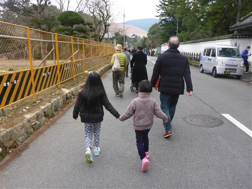
ずいぶんと古そうな壁。
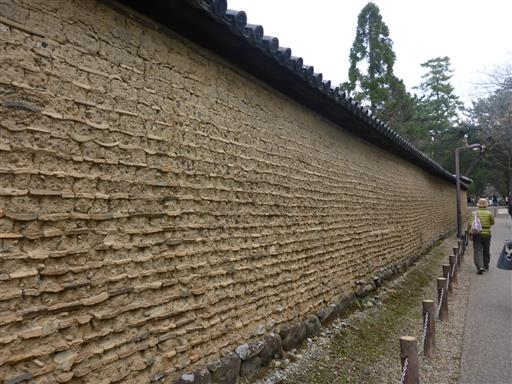
奈良と言えば鹿。早速、鹿がお出迎えだ。
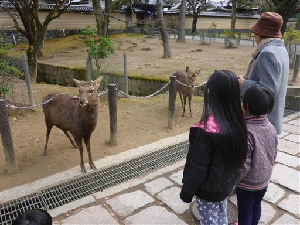
中門。ここから先が有料区間だ。
門は封鎖されていて、端の入口から入るようになっている。

金堂（大仏殿）。国宝。
2度焼失していて、現存するのは1709年に再建されたものらしい。
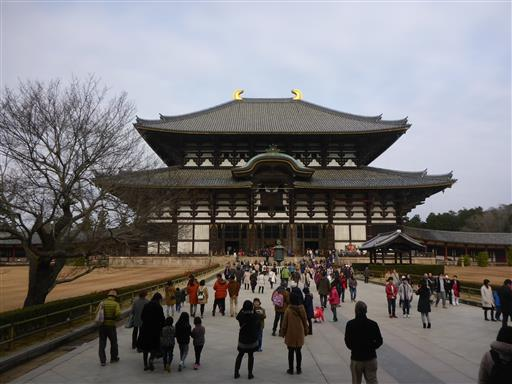
近づいて見上げると非常に大きい。
近代的な建築物を除けば、世界最大の木造建築である。
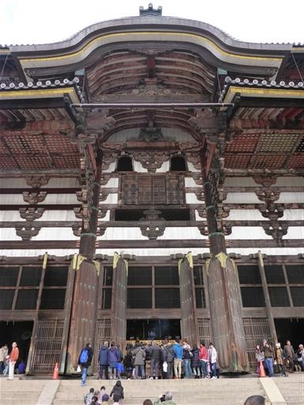
有名な奈良の大仏。高さ14.7mの大きさだ。
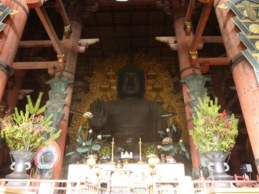
建物内は参拝客であふれている。
人が少なくガランとしていた法隆寺とはずいぶん違う。
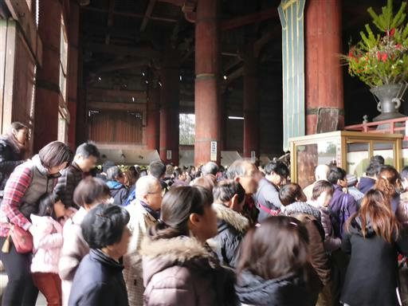
天井が非常に高く、木組みが美しい。
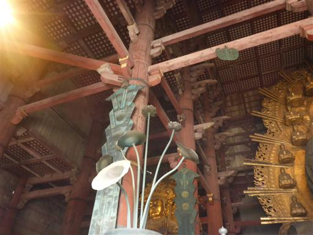
どこに続いているのか、非常に急な階段が上に伸びている。
是非上ってみたいが、階段入口は封鎖されている。
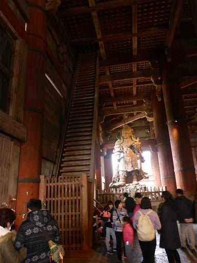
東大寺の往時の模型。以前は東西2つの七重塔があったようだ。
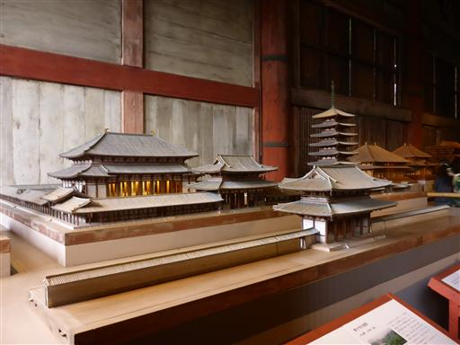
大仏の背中に回り込む。
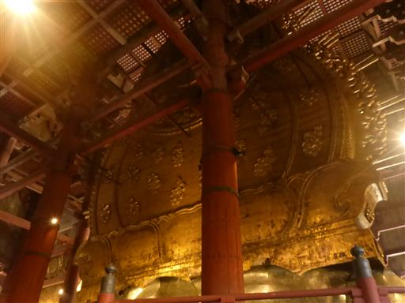
大仏の手と野球ボールの模型。なぜか大仏の大きさを野球道具で表現している。

柱に大仏の鼻の穴のサイズといわれる穴が開いている。
子供の時に潜って以来、久々に潜ってみたがかなり厳しい。
後ろに並んでいる人がいるため、つっかえる訳にもいかずプレッシャーがある。
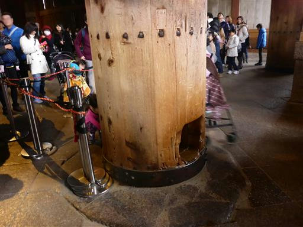
参拝を終えたら、南大門を潜って境外に出る。

南大門の金剛力士像。巨大な木像だ。
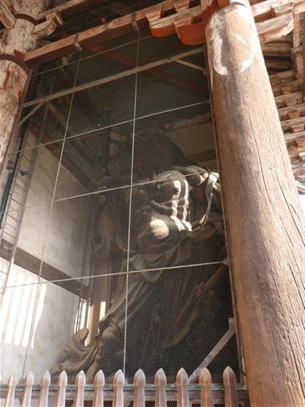
こちらの天井も非常に高く、金堂とよく似ている。
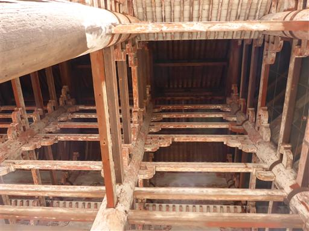
昼食をとるレストランを探していたが、露店が立ち並んでいるので、
そこで適当に食べ物を買うことにする。
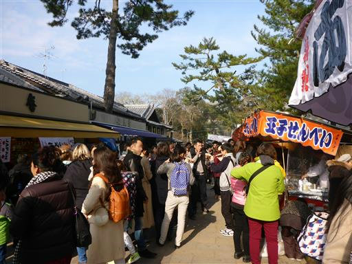
昼食をとっていると、鹿が食べ物を狙って襲ってくる。
息子は鹿にフランクフルトを取られて呆然としていた。
草食の鹿がフランクフルトなどを食べて大丈夫なのだろうか？
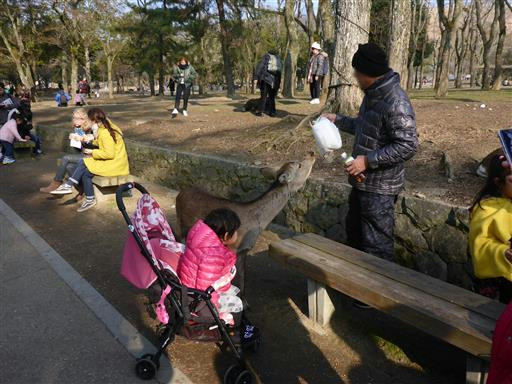
鹿せんべいを買ってきて与えようとしたが、
これだけ鹿がいるのに、どの鹿もそっぽを向いて食べてくれない。
露店近くの鹿は舌が肥えているようだ。
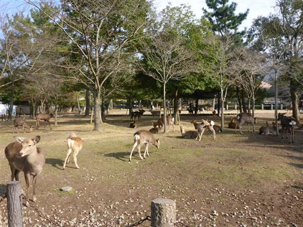
鹿せんべいを食べてくれる鹿を求めて場所を移動する。
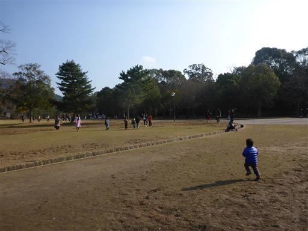
再び南大門を越えると、ようやく食べてくれた。
子供達は喜んで鹿せんべいを与えている。
鹿のおかげで今年は子供達も楽しめる初詣となった。